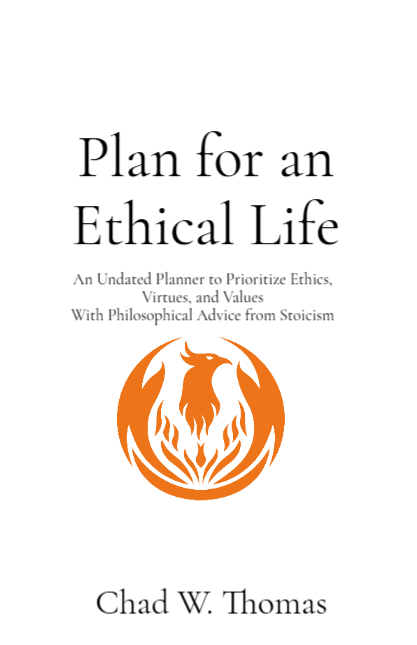

Books Published by Chad W. Thomas
-
Plan for an Ethical Life: An Undated Planner to Prioritize Ethics, Virtues, and Values With
Philosophical Advice from Stoicism
by Chad W. Thomas; ISBN:9798234082336. The books usually ship via USPS with an estimated time of arrival of two weeks and a tracking number sent to your email.
You can view the PDF version of Plan for an Ethical Life on my GitHub repository.

- Forthcoming on August 3, 2026: You Are Enough: How I Learned to Love Myself by Chad W. Thomas
List of Recommended Books and Resources
I receive a 10% commission from sales through my BookShop page which you can view below.
Recommended Books
The links connect to the publisher's website. You might need to search around for the format you want.
- Make Your Bed: Little Things that Can Change Your Life … And Maybe the World by Admiral William H. McRaven published by Grand Central Publishing
- The 5AM Club: Own Your Morning. Elevate Your Life by Robin Sharma published by HarperCollins Publishers
- The Monk Who Sold His Ferrari: A Fable About Fulfilling Your Dreams & Reaching Your Destiny by Robin Sharma published by Harper San Francisco
- 12 Rules for Life: An Antidote to Chaos by Jordan B. Peterson published by Random House Canada
- Man’s Search for Meaning by Viktor Frankl published by Beacon Press
- Meditations by Marcus Aurelius published by Modern Library
-
Discourses and Selected Writings by Epictetus published by Penguin Classics
a. This edition of Discourses contains a selection of Epictetus’ lectures selected by the publisher and translator.
- Letters from a Stoic by Seneca published by Penguin Classics
- The Last Days of Socrates by Plato published by Penguin Classics
-
Epictetus The Complete Works Handbook Discourses & Fragments published by The University of Chicago Press
This edition of Discourses is a complete edition, according to the publisher.
-
The Philosophy of Aristotle with an Afterword by Susanne Bobzien published by Signet Classics
a. I read the excerpts from Nicomachean Ethics and Politics.
- The 7 Habits of Highly Effective Leaders by Stephen R. Covey published by Simon & Schuster
- The First Year: Crohn's Disease and Ulcerative Colitis: An Essential Guide for the Newly Diagnosed by Jill Skylar and Manuel Sklar MD published by Balance
Most Influential Resources
-
Encyclopedia Britannica
a. Encyclopedia Britannica was the first resource about emotions and psychology I trusted in 2018 and 2019 because I read from an Encyclopedia Brittanica in the school library when I was in the 4th grade. I felt a connection to that memory and felt safe. At that time, I didn’t know what safe meant, I knew I felt less pressure in my heart and lungs.
- Also, I read these websites to learn about grammar, sentence structure, and health science:
- Psychology Today
a. I learned how to identify emotions, connect emotions to words, and regulate emotions.
- Purdue University Online Writing Library
a. Purdue OWL offers guidance on writing techniques and formality.
- Daily Stoic from Ryan Holiday on YouTube and on his website, Daily Stoic
a. I learned about ethics, responsibility, and that my will is within my power.
- Jordan B. Peterson on YouTube and on his website www.jordanbpeterson.com
a. I learned about personality types, how to regulate my emotions, and how to find a sense of purpose in life.
- College Info Geek from Thomas Frank
a. I recommend his Start Here page, then his Impossible List. I learned about how to set, prioritize, and organize goals.
- Stanford Encyclopedia of Philosophy
a. I learned about philosophy from over 3000 years old for free.
- Tiny Buddha
I learned about mindfulness and reflection from Tiny Buddha.
- FitMind App
a. I began using the FitMind App to practice mindfulness and detach from thoughts at the recommendation of a friend, Aspasia. “You are not your mind. You are not your body. You are enough.” Thank you, Aspasia.
- Yoga with Adriene
a. I learned how to do yoga from Yoga with Adriene and from yoga instructors at Florida State University and the University of Central Florida.
- HarvardX: Justice by Professor Sandel